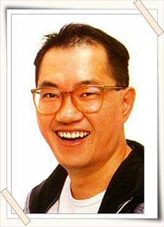

Tribute Page
Let´s play some music.
Akira Toriyama
The sensei Akira Toriyama Akira Toriyama is a Japanese manga artist and character designer. He first achieved mainstream recognition for his highly successful manga series Dr. Slump, before going on to create Dragon Ball—his best-known work—and acting as a character designer for several popular video games such as the Dragon Quest series, Chrono Trigger and Blue Dragon.
Toriyama is regarded as one of the artists that changed the history of manga, as his works are highly influential and popular, particularly Dragon Ball, which many manga artists cite as a source of inspiration.
He earned the 1981 Shogakukan Manga Award for best shonen or shojo manga with Dr. Slump, and it went on to sell over 35 million copies in Japan. It was adapted into a successful anime series, with a second anime created in 1997, 13 years after the manga ended.
 His next series, Dragon Ball, would become one of the most popular and successful manga in the world. Having sold 250–300 million copies worldwide, it is the third best-selling manga of all time and is considered to be one of the main reasons for the period when manga circulation was at its highest in the mid-1980s and mid-1990s. .
His next series, Dragon Ball, would become one of the most popular and successful manga in the world. Having sold 250–300 million copies worldwide, it is the third best-selling manga of all time and is considered to be one of the main reasons for the period when manga circulation was at its highest in the mid-1980s and mid-1990s. .Overseas, Dragon Ball's anime adaptations have been more successful than the manga and are credited with boosting anime's popularity in the Western world. In 2019, Toriyama was decorated a Chevalier of the French Ordre des Arts et des Lettres for his contributions to the arts.
 Toriyama admires Osamu Tezuka's Astro Boy and was impressed by Walt Disney's One Hundred and One Dalmatians, which he remembers for its high-quality animation. Jackie Chan's early movies also had a noticeable influence on his stories, particularly Chan's martial arts comedy film Drunken Master.
Toriyama admires Osamu Tezuka's Astro Boy and was impressed by Walt Disney's One Hundred and One Dalmatians, which he remembers for its high-quality animation. Jackie Chan's early movies also had a noticeable influence on his stories, particularly Chan's martial arts comedy film Drunken Master.To read more info, please click here